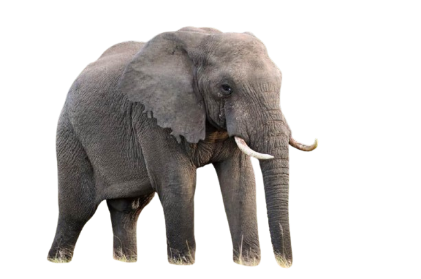

.jpeg)
חדק הפיל המאפיין הבולט ביותר של הפיל הוא החדק, שהוא התארכות של האף והשפה העליונה. לחדק מספר שימושים: החדק משמש כאפו של הפיל - הפיל נושם דרך נחיריו המצויים בחדק (כמו בני האדם הוא מסוגל לנשום גם דרך פיו) וכן מריח דרכם. הפיל הוא שחיין מצוין, והוא יכול גם לשהות מתחת למים זמן רב בעת שהחדק משמש לו צינור העברה של אוויר, בדומה לשנורקל אצל צוללים אנושיים. החדק משמש גם כמעין זרוע עבור הפיל ובאמצעותו הוא יכול לאחוז בחפצים ולהרימם, לשאתם או לדחוף אותם. החדק מורכב משרירים רבים המאפשרים חוזק וכוח מחד, וגמישות ועדינות רבה מאידך. באמצעות חדקו יכול הפיל לברור ולהרים מן הקרקע גושי סוכר קטנים מתוך שכבה של חול ובאותה מידה הוא יכול להרים גזע עץ במשקל של עשרות קילוגרמים. הפיל משתמש בחדק גם כדי ללקט מזון. באמצעותו הוא מגיע אל ענפים גבוהים או שהוא אוסף בעזרתו את המזון מן הקרקע ואז מביא אותו אל פיו. בכך עושה הפיל בחדק שימוש הדומה ליד אוחזת. הפיל מסוגל להשמיע באמצעות החדק קולות הנשמעים למרחוק, כמעין חצוצרה. החדק חזק מאוד ומשמש "שוט" לסילוק תוקפים הפיל יכול לשאוב מים באמצעות החדק ולהביאם אל פיו כדי לשתות או להתיזם על גופו כדי להצטנן מעט בימים חמים. כמו כן יכול הוא לאסוף עפר מן הקרקע ולפזר על גבו כדי ליצור כסות דקה שתשמש מגן מפני חרקים עוקצים או נושכים. הבדלים בין סוגי הפילים בין הפילים האפריקניים לפיל האסייתי ישנם מספר הבדלים חזותיים בולטים:  גודל הגוף: הפילים האפריקניים גדולים יותר ומשקלם של בוגרים זכרים עשוי להגיע גם לעשרה טון מטרי. לעומת זאת, משקלו של הפיל האסייתי מגיע לחמישה טון מטרי. אפרכסות האוזניים גדולות יותר בקרב הפילים האפריקניים. חטי השנהב: אצל נקבת הפיל האסייתי החטים חסרים. בקצה החדק של הפיל האפריקני שתי אונות בשריות, זו מול זו, כמעין אצבעות, ואילו לפיל האסייתי יש רק אונה אחת בקצה החדק. ראשו של הפיל האסייתי קצר יותר וגבו מתקמר כלפי מטה בעוד שגבו של הפיל האפריקני ישר יותר. אורך רגליים: פילים רבים מזן "פיל מדברי" החיים במדבריות נמיביה מאופיינים כתת-מין עקב גובהם הרב ורגליהם הארוכות (מכונים בסלנג מקומי "פיל ג'ירפי").
.png)